AIOps with IBM Z and LinuxONE Hands-on Workshop¶
Agenda¶
| Activity | Duration |
|---|---|
| Presentation | ~ 1 hour |
| Demonstration - AIOps with z/OS | ~ 15 minutes |
| Hands-on, self-paced lab | Remainder of workshop |
Presentation¶
Labs¶
It is recommended that you complete the Instana lab first then move on to the Turbonomic and/or IBM Cloud Pak for AIOps labs.
Each lab can be completed independently from one another, but some context will be lost if you do not complete the Instana lab first.
A word about the labs
There are often minor changes to the appearance of the user interface for the products used in the labs- e.g., changes in an icon's appearance or color, or minor changes in text on a button, etc. As a result, some screen snippets shown in the labs may differ slightly from what you encounter during the labs. These differences should not affect the functionality of the labs, but please don't hesitate to ask for an instructor's help if any confusion arises due to the difference between the lab instructions and your lab experience.
Workshop Environment Architecture¶
Please visit this page to see the architecture of the workshop's lab environment.
Workshop Owners¶
Workshop Owner Emeritus¶
We hereby publicly acknowledge our gratitude to Matt Mondics, the original author of this workshop.
Accessing the Environment¶
From your local workstation, you will access a workshop Windows virtual machine from which you will perform the lab. This virtual machine is provided by the IBM Technology Zone service.
The directions for logging in to IBM Technology Zone and accessing your workshop virtual machine are given in the next section, but please read the following tips first:
From your local workstation
Your experience may vary, but in past workshops, the virtual machines seemed to work best in a Firefox browser on your local workstation. Running the virtual machines in Chrome sometimes resulted in an issue where your mouse pointer is not visible.
From within the workshop virtual machine
Regardless of which browser you use on your local workstation, within the virtual machine itself, Chrome has been set to the default browser. The lab works best in Chrome within the virtual machine.
Within your virtual machine, the workshop website has been set as your home page within Chrome. Once you are successfully logged in to your virtual machine, it is recommended for your convenience that you stop accessing this site from your local workstation but instead access this site from within your virtual machine.
Accessing your Virtual Machine¶
-
Go here: (LINK TBD)
-
If you are not currently logged in with your IBMid, you will be prompted to log in at a screen like below. If you do not already have an IBMid, the log in page should contain a link to allow you to create one. They are free and it only takes a few minutes to create it.

Tip
If the log in page does not have an obvious link for creating an IBMid, try here
-
You should reach the workshop page. There will be a field where you are asked to enter the workshop password, as in this screen snippet:

Enter the workshop password provided by your instructor. For security reasons, this password is not listed here.
-
Once you successfully enter the workshop password, you should be assigned an environment, as shown in the below screen snippet:

On this same page that shows the environment, near the bottom will be a large blue button, as shown below, which will allow you to access your workshop virtual machine within your browser.

Important
Take note of your environment number, as you should use that number as the last two digits of your userid for the lab. For example, if you were assigned environment 1, then you will use the userid user01 throughout the labs. If you were assigned environment 2, then you will use the userid user02 throught the labs. And so on.
-
If prompted, log into the Windows virtual machine with username Administrator (which should already be set for you) and password:
IBMDem0s(that's a zero). You may already be logged in when first accessing the VM.
Links to the consoles used in the lab¶
Tip
These URLs are given within each lab section at the appropriate place. They are repeated here for your convenience. If you accidentally close your browser tab or window and lose your session, you can use the links here to easily resume your interrupted session.
- OpenShift Cluster URL: https://console-openshift-console.apps.atsocpd1.dmz/dashboards
- Instana URL: https://unit0-wsc.lcsins01.dmz
- IBM Cloud Pak for AIOps URL: https://cpd-cp4aiops.apps.ocpaocp.dmz/zen/#/homepage
If you cannot access the webpage for any of the platforms above, check that the Cisco Secure Client VPN is logged in on the Virtual Machine. If it is no longer logged in, please let the lab instructor know.
Please do not log off or reboot the Virtual Machine, as that will disconnect the VPN.
OpenShift, Instana, and CP4AIOps credentials:¶
Usernames and passwords are the same for all of the platforms used in this tutorial.
| Environment ID | NN | Username | Password |
|---|---|---|---|
| 1 | 01 | user01 |
p@ssw0rd |
| 2 | 02 | user02 |
p@ssw0rd |
| 3 | 03 | user03 |
p@ssw0rd |
| 4 | 04 | user04 |
p@ssw0rd |
| 5 | 05 | user05 |
p@ssw0rd |
| 6 | 06 | user06 |
p@ssw0rd |
| 7 | 07 | user07 |
p@ssw0rd |
| 8 | 08 | user08 |
p@ssw0rd |
| 9 | 09 | user09 |
p@ssw0rd |
| 10 | 10 | user10 |
p@ssw0rd |
| 11 | 11 | user11 |
p@ssw0rd |
| 12 | 12 | user12 |
p@ssw0rd |
| 13 | 13 | user13 |
p@ssw0rd |
| 14 | 14 | user14 |
p@ssw0rd |
| 15 | 15 | user15 |
p@ssw0rd |
| 16 | 16 | user16 |
p@ssw0rd |
| 17 | 17 | user17 |
p@ssw0rd |
| 18 | 18 | user18 |
p@ssw0rd |
| 19 | 19 | user19 |
p@ssw0rd |
| 20 | 20 | user20 |
p@ssw0rd |
Lab Environment Diagram¶
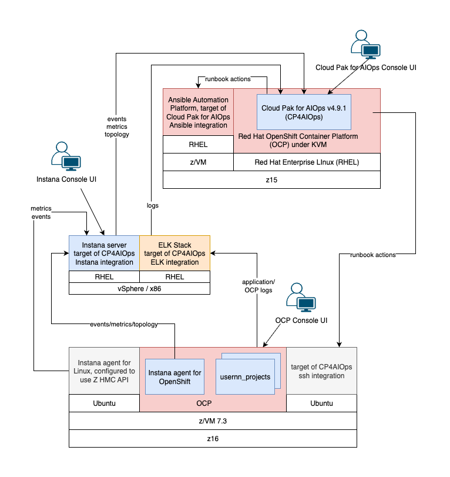
AIOps with IBM Z and LinuxONE¶
In this lab, you will become familiar with two of IBM's strategic AIOps solutions - Instana, and Cloud Pak for AIOps - and the capabilities they have to monitor and manage IBM Z applications and infrastructure.
You will work with a simple application and see how Instana observes it. You will then purposely introduce an error into the application and see how Cloud Pak for AIOps receives an event from Instana concerning the error, turns that event into an alert, and then promotes that alert to an incident. You will then use a Cloud Pak for AIOps automation runbook attached to the incident to resolve the error.
Tip
In the time allotted for this lab, we will just scratch the surface of the features and capabilities of Instana and Cloud Pak for AIOps. As you navigate through the various screens when using the two products, you may see many tabs or links or widgets that are just begging you to click them and check them out. Try to resist the temptation to stray beyond what is explicitly instructed in these lab instructions, or it will be very difficult to finish the lab in the allotted time.
Today's lab instances will be available until Friday morning if you wish to explore deeper later. Alternatively, contact the lab owner if you would like to do a longer lab (two to four hours) that goes into more depth. In addition, there will be additional resources listed at the end of these instructions for you to check out if you are interested in learning more about these products.
Environment Overview¶
Our lab environment looks like this. All of these systems are running with the IBM Washington System Center's data center in Herndon, Virginia, US. You will use the the web-based console for three different products: Red Hat OpenShift Container Platform (OCP), Instana, and Cloud Pak for AIOps.
Connecting to the Lab Environment¶
It is assumed you have already signed into IBM Technology Zone and been assigned a Windows workstation lab environment and have logged into Windows. Visit the TechZone Environment Access Page if you haven't done this yet.
You were assigned a unique environment id, from 1 to 20. In the lab you will be accessing various consoles, and you must use usernn where nn matches your environment id. (The nn in usernn is always two digits, so, e.g., if you have environment 2, then you will use user02 throughout the lab, not user2.)
Console URLs and credentials used in the lab are listed on the Lab Consoles Access page. You probably won't have to visit this page too often as all of the consoles that you will log into will use the same userid (your unique usernn) and password, but it won't hurt to keep it open in a browser tab.
Instana¶
Overview of Instana Observability¶
Instana is an enterprise observability solution that offers application performance management - no matter where the application or infrastructure resides. Instana can monitor both containerized and traditional applications, various infrastructure types including OpenShift, public clouds & other containerization platforms, native Linux, z/OS, websites, databases, and more. The current list of supported technologies can be found in the Instana documentation.
Log in to the Red Hat OpenShift Container Platform web console¶
-
Open the Red Hat OpenShift Container Platform web console at https://console-openshift-console.apps.atsocpd1.dmz
A note on abbreviations
For the sake of brevity, we may refer to Red Hat OpenShift Container Platform as either OpenShift or OCP throughout this lab.
Click through any warnings
Our lab environments use self-signed certificates, so click through any browser warnings that might arise as a result.
You should now see the OpenShift console login page.
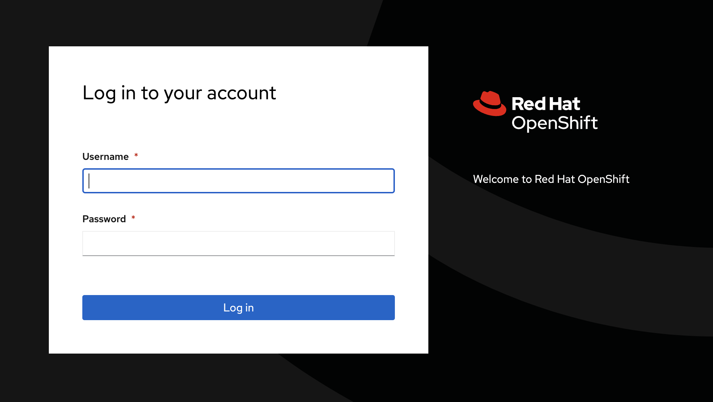
-
Log in to OCP with your credentials. Your userid will be usernn where nn is the unique number assigned to you, and your password will be in the table in the Lab Consoles Access page.
Viewing the Instana Agent on OpenShift¶
Instana collects information about OpenShift Container Platform by means of an agent provided by Instana that is installed on the OCP cluster. In this section you will view information about the Instana agent from the OCP Console.
-
In the OpenShift console, navigate to the
instana-agentproject (1) then click the circular icon on the Topology page that is labeledinstana-agent(2).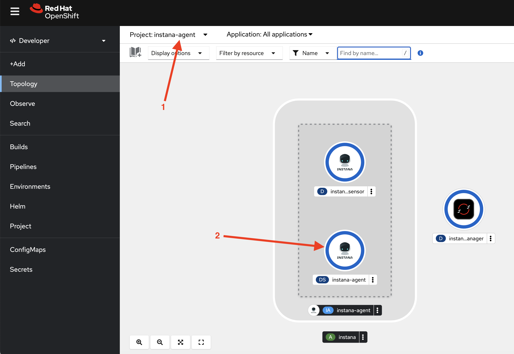
This is the Instana agent that is collecting all the information about the containerized applications running on OpenShift and sending that information to the Instana server.
The agent is deployed as a DaemonSet, which is a Kubernetes object that ensures one copy of the pod runs on each compute node in the cluster. Each individual Instana agent pod is responsible for the data and metrics collection for the applications running on its compute node.
The agent introspects the cluster, and based on the technologies it detects, it deploys the appropriate sensors for the technologies that it finds.
-
Click the other circular icon on the Topology page (1), the one that is labeled
instana-agent-k8sensor. A sidebar will appear (2) with more information.Tip
Underneath the circular icon it is probable that the full name
instana-agent-k8sensoris not shown in the UI unless you hover your cursor over the name.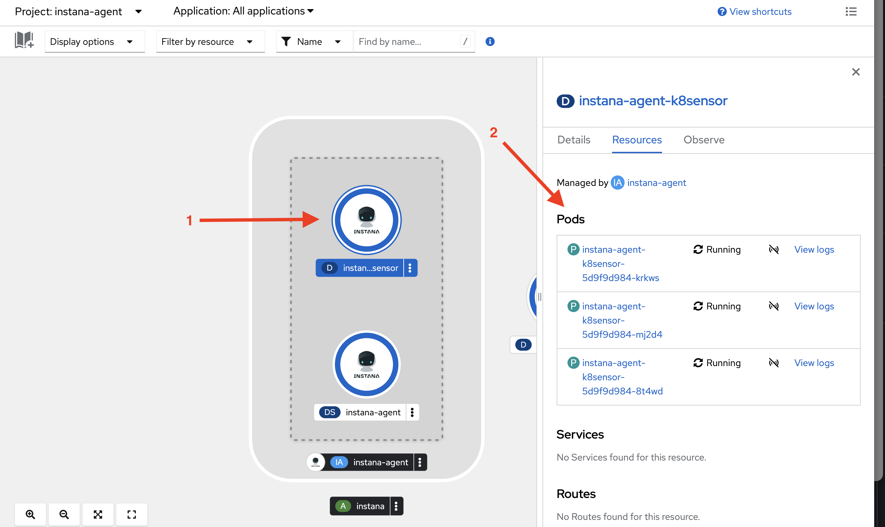
The
instana-agent-k8sensorpods are where the sensors deployed by the agent run. The sensors are responsible for gathering information about the OpenShift cluster itself and all of the Kubernetes objects it includes - pods, namespaces, routes, etc., and sending that information to the agent which then sends it to the Instana backend server.
Viewing the sample application on OpenShift¶
You will work with your own instance of a sample application that runs in OpenShift. This application has a web frontend built with Node.js, and a PostgreSQL database on the backend. In this section you will view the application in the OpenShift Console.
-
Under the Developer perspective (1), navigate to the Topology page (2) for the
usernn-projectproject, where nn is your unique id (3).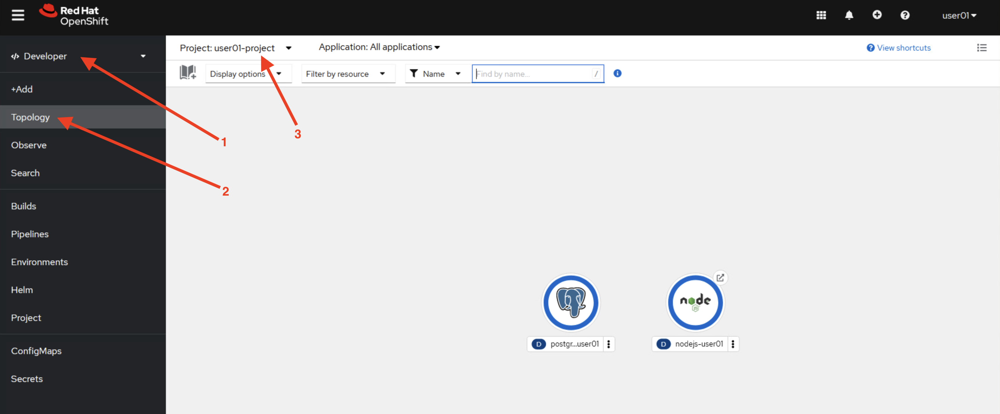
Your project has a very simple sample application that we'll call the Fruit application. This application stores an inventory of fruit in a Postgresql database running in a pod whose name starts with postgresql-usernn. The application serves a web page with a Node.js application running in a pod whose name starts with nodejs-usernn. The web page allows you to view the fruit inventory and to modify it by adding fruits to the inventory, changing the quantity of a fruit in the inventory, and deleting a fruit from the inventory. In other words, a very simple CRUD (Create, Read, Update, Delete) application.
-
Within your Topology view, Open the Fruit web application by clicking the small button in the top right of the
nodejs-usernnicon.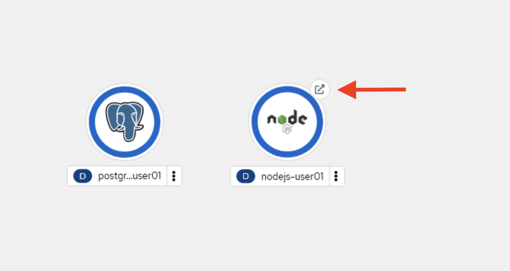
This is simply a hyperlink that will take you to the Fruit application web page. Those services that are intended to be accessible externally, from outside the OCP cluster- perhaps by another program running outside the OCP cluster, or perhaps by a human, like you, sitting in front of a browser- have routes defined to allow this external access. An external URL is associated with a route, and the hyperlink you clicked invoked this URL. Notice that there is not a hyperlink for the postgresql-usernn deployment. That is because this is the backend that is intended to only be accessbile by the frontend- it is not intended to be directly accessible by an external user.
The Fruit application should appear like the screenshot below. It starts out with a sample fruit inventory.
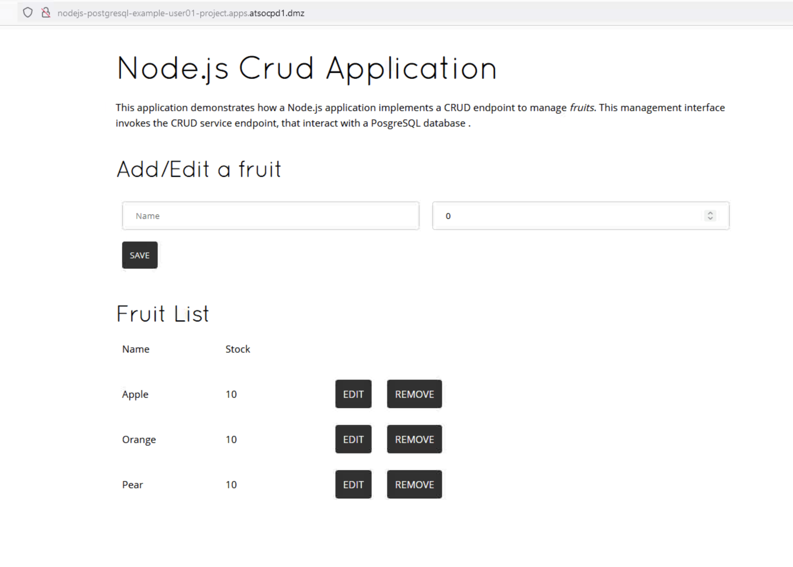
You'll get a chance to play with the application in a moment, but first let's get logged in to Instana.
Navigating the Instana web console¶
In this section we'll get you logged in to the Instana console UI, and give you a brief tour of some of the options available from the Instana console. Then we'll focus on how you can observe your Fruit application from the Instana console.
-
Open the web console of the Instana server at https://unit0-wsc.lcsins01.dmz.
-
Log in to Instana with your credentials- yep, usernn and that tricky password that you've already used.
When you first log in to Instana, you will be taken to the Home Page. This is a customizable summary page that shows the key metrics for selected components of your environment in the timeframe specified in the top right of the screen. We don't really use the Home Page in the lab and we haven't customized it, so we're going to use the left-side panel menu to look at things.
-
Hover (click if necessary) over the left-side panel so the menu appears.
You hopefully see a vertical row of icons at the left side of the Console. If you hover your mouse anywhere on this vertical row then it should expand to show the names of the menu items, similar to the below screen snippet:
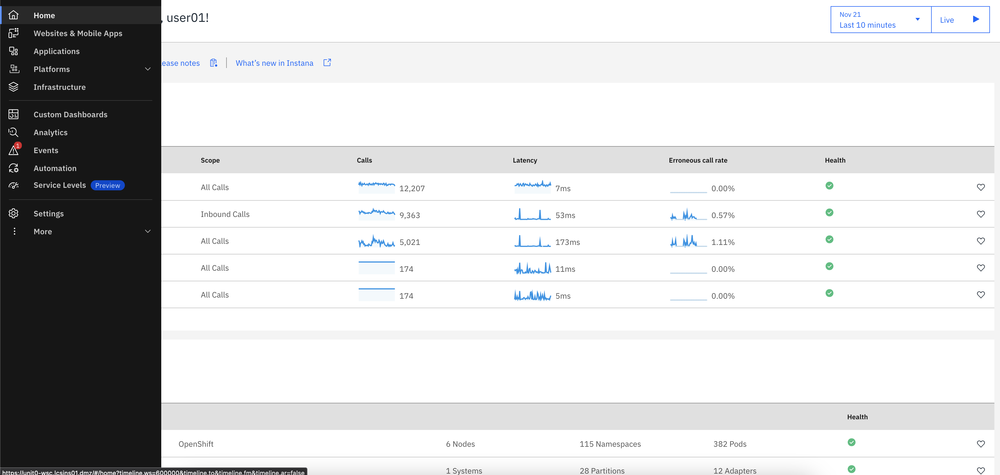
We'll go through some of these menu items now.
First, you'll take a look at Instana's Kubernetes monitoring capabilities.
-
Click the Platforms -> Kubernetes option in the left side menu.
You should see a screen similar to below, which is called the card view. You can toggle between card view and list view by clicking the widget highlighted (1) in the screen snippet:
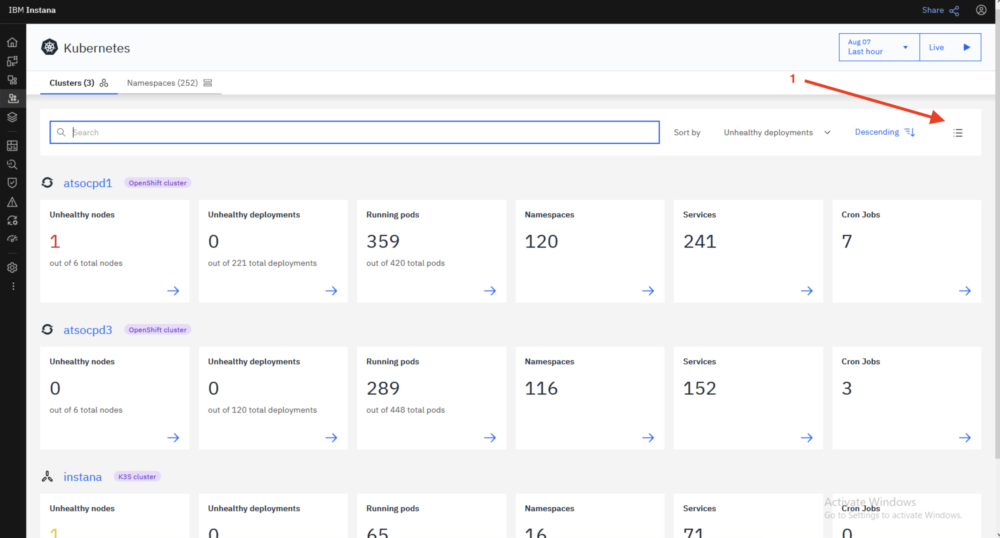
-
Toggle to list view
You should see a screen similar to this:
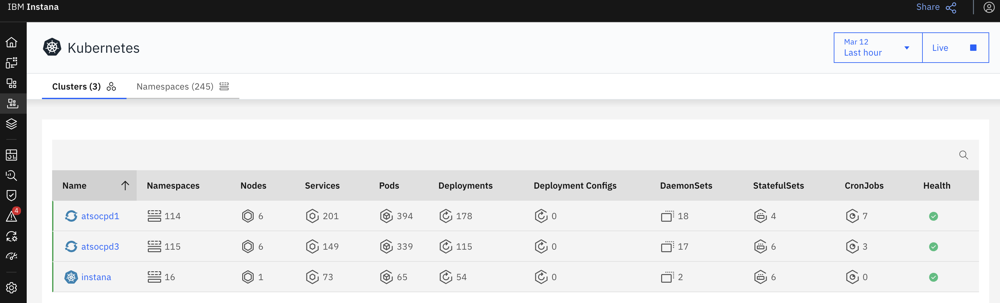
Info
atsocpd1 is an OCP cluster running on an IBM z16 in the Washington Systems Center data center in Herndon, Virginia, USA. The Fruit application that you are working with in this lab runs on this cluster.
atsocpd3 is another OCP cluster running on the same IBM z16 as atsocpd1. The Instana agent is installed on it also, which is why you see it listed here, but this cluster is not used in the lab.
instana is the Instana server itself, which has been installed as a Self-hosted Standard Edition single-node cluster on a server with the x86_64 architecture.
-
Click the atsocpd1 hyperlink in the Names column.
You should see a screen that looks like this:
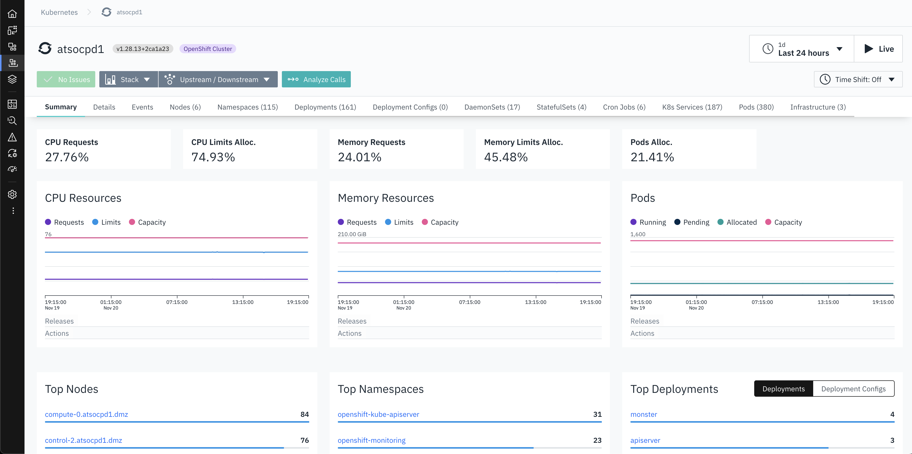
The Summary page shows the most relevant information for the cluster as a whole. The CPU, Memory, and Pod usage information are shown. The other sections, such as "Top Nodes" and "Top Deployments", show potential hotspots which you might want to have a look at.
-
From the left-side menu, expand Platforms and then click IBM Z HMC.
You should see something like this:
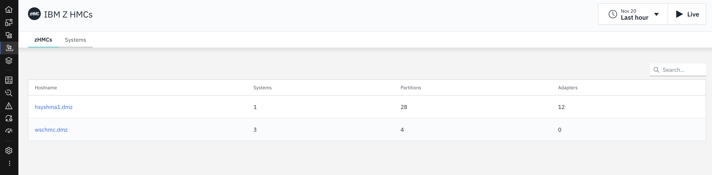
Instana supports monitoring IBM Z and LinuxONE hardware metrics and messages via the IBM Z Hardware Management Console, or HMC.
In the Instana console (and in the screenshot above), you should see two separate HMCs. hsyshma1.dmz is managing a single DPM-mode IBM Z machine, while wschmc.dmz is managing three classic-mode (i.e., PR/SM) IBM Z machines.
-
Click the hyperlink for wschmc.dmz
You will then see a screen like this:
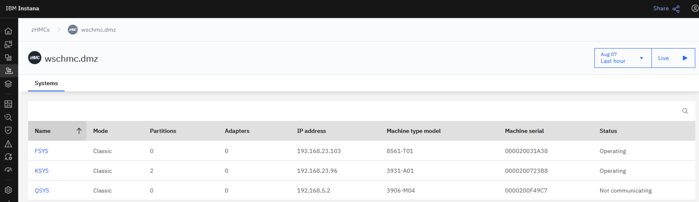
This page shows you high level information about the IBM Z or LinuxONE machines themselves, including number of partitions, adapters, IP addresses, Machine Type Models and Machine Serial numbers.
Which system is a z14, which is a z15, and which is a z16? Click to reveal the answer.
- QSYS: z14 (machine type 3906) Note: we recently decommissioned our z14, which is why Instana says it is not communicating
- FSYS: z15 (machine type 8561)
- KSYS: z16 (machine type 3931)
You may notice that there are only a small number of partitions and adapters listed for each system. This is due to the fact that Instana only displays the objects (LPARs, adapters, channels, etc) that a specific zHMC userid has access to. If you want to add or remove visibility to certain objects in Instana, you do so by managing the zHMC userid just as system administrators already do.
-
Click the hyperlink for KSYS
This is the z16 on which the OCP clusters run.
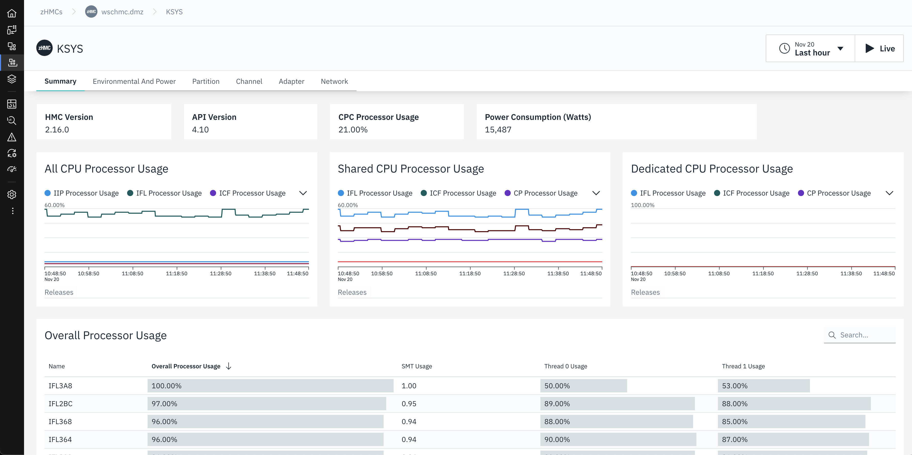
You can now see the overall system utilization as well as that of individual processors.
Viewing your sample application in Instana¶
Let's return now to your sample Fruit application. First let's look for it in the Instana Console.
-
From the left-side menu, choose Applications
You should see a page similar to this:
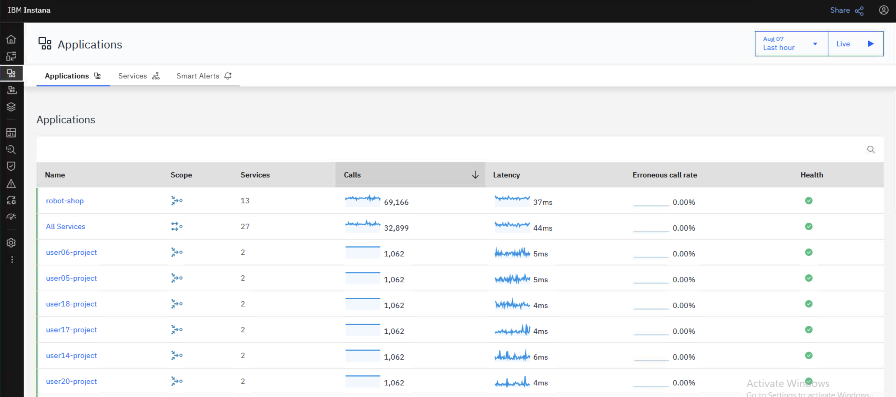
-
Find your usernn-project in the Name column in the list of applications and select it.
There are about 24 applications being monitored by our lab's Instana and the list only shows 20 by default, so use the search bar at the top of the list or scroll to the next page at the bottom of the list if you have to in order to find your unique usernn-project.
You'll see a page like this:
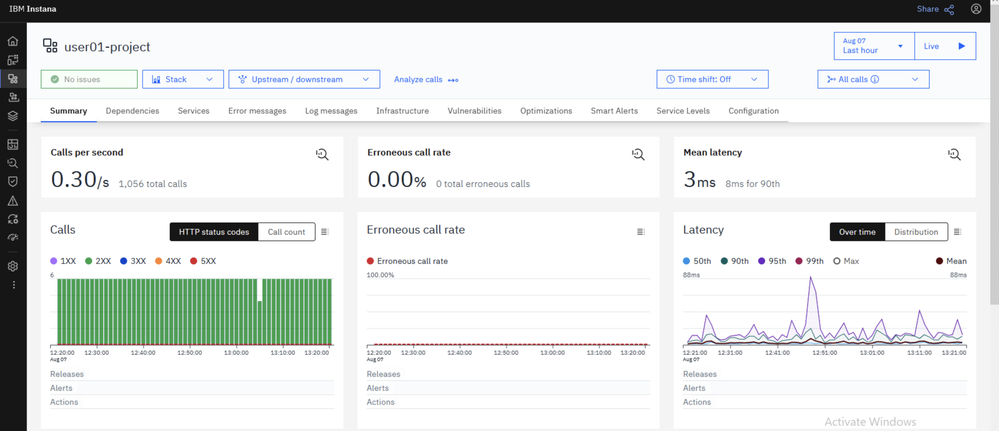
-
Notice in the above screen shot, in the upper right, there is a box that says "Aug 07 Last hour" and a box next to it that says "Live" with a triangle icon.
The icon in the "Live" box is a triangle when the screen is not automatically being updated with live data as time marches on. If the icon in the "Live" box is a triangle, click it, and the button will now change to have a square icon in the "Live" box, and now the screen updates with live data.
Now that you're getting live data, click on the button that says 'Last hour' and choose the option 'Last 5 minutes'.
When done, the two widgets to control the time interval and whether you're getting live data should look similar to what is in the below screen snippet:
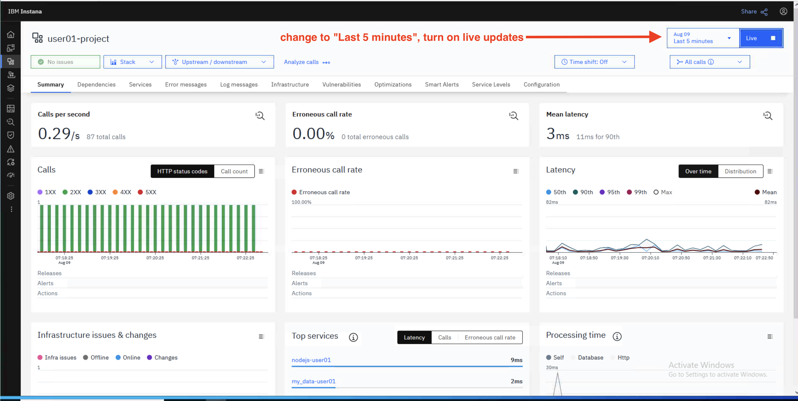
The reason we had you change to showing only the last 5 minutes was so that it would be easier to see the activity flow in the various graphs on the application page. For example, look at the Calls per second graph and you will notice the bars moving from right to left. Within the front-end code for the Fruit application, there is a call being made periodically.
Use your sample application and verify activity is being monitored by Instana¶
-
Go back to the browser tab that has the Fruit application in it. Spend about a minute performing some transactions- you could add inventory for a new fruit, change the inventory for existing fruits, or even delete a fruit from the inventory.
Here's an example screen snippet where bananas were added to the inventory, the quantity for oranges was modified, and pears were removed from the inventory:
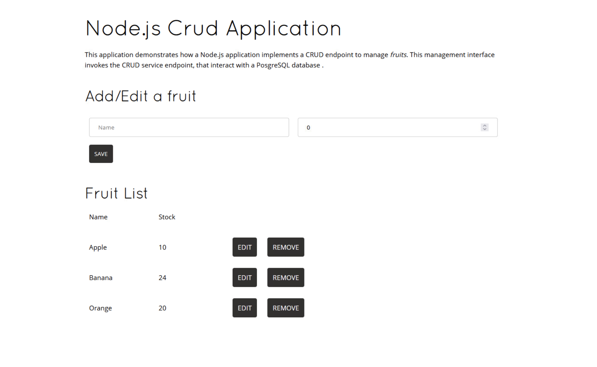
-
Switch back to the broswer tab for the Instana console UI. You should be able to detect the activity from your transactions. In the screen snippet below, you can see that several transactions were performed in the last couple of minutes:
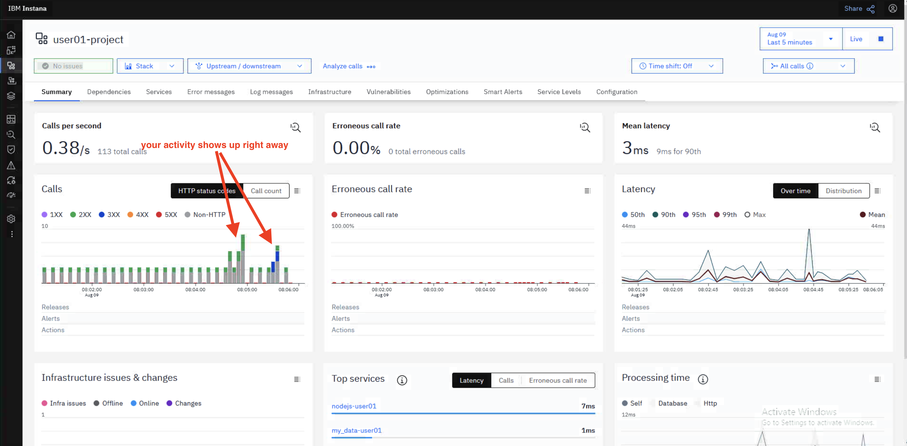
Instana recap¶
You've seen that Instana can observe hardware information from the Z HMC, container platform-level information from Kubernetes and OpenShift, and application-level information. We only gave you a small sample today.
IBM Cloud Pak for AIOps¶
In this part of the lab you will intentionally break the Fruit application. Then you'll use IBM Cloud Pak for AIOps to resolve the problem.
Here is a simplified description of what's going on in the rest of the lab:
-
The Instana agent running in the OpenShift cluster detects a problem with the Fruit application's deployment and sends a message to the Instana backend server
-
Cloud Pak for AIOps receives an event about this from the Instana backend server
-
Cloud Pak for AIOps creates an alert based on this event
-
A user-written policy in Cloud Pak for AIOps inspects the alert and attaches a runbook to it which is designed to correct the problem
-
Another user-written policy in Cloud Pak for AIOPs inspects the alert and promotes the alert to an incident
-
You will use the recommend runbook to correct the problem
Introduce an Error into your Fruit application¶
In this section, you will break your sample application via the OCP console UI.
-
In the OpenShift console, under the developer perspective, navigate to your usernn-project namespace topology (1), click the Postgresql icon (2), and then click the postgresql-userNN deployment hyperlink (3).
Tip
You probably still have your OpenShift Web Console tab open. If not, you can find the URL again on the Environment Access page.

-
Under the Environment tab (1), change the value for POSTGRESQL_DATABASE from my_data-usernn to my_data-usernn-error (2). Click Save at the bottom of the page. (Save button is not shown on the below screen snippet.)
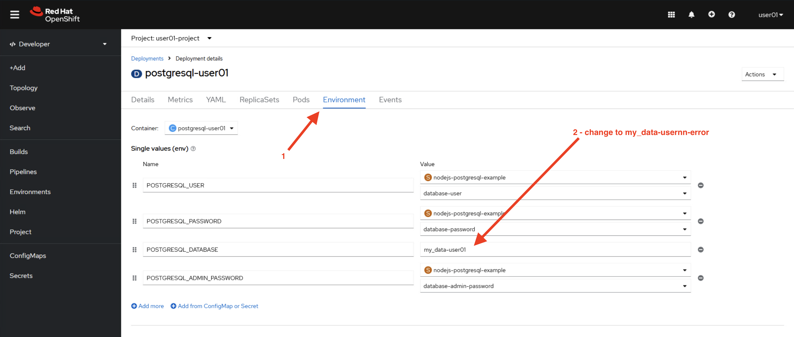
You've broken the application because the frontend expects the database name to be my_data-usernn and you reconfigured the backend to use a database name of my_data-usernn-error.
-
Go back to your Fruit application browser tab and reload the page with the browser tab's reload button:
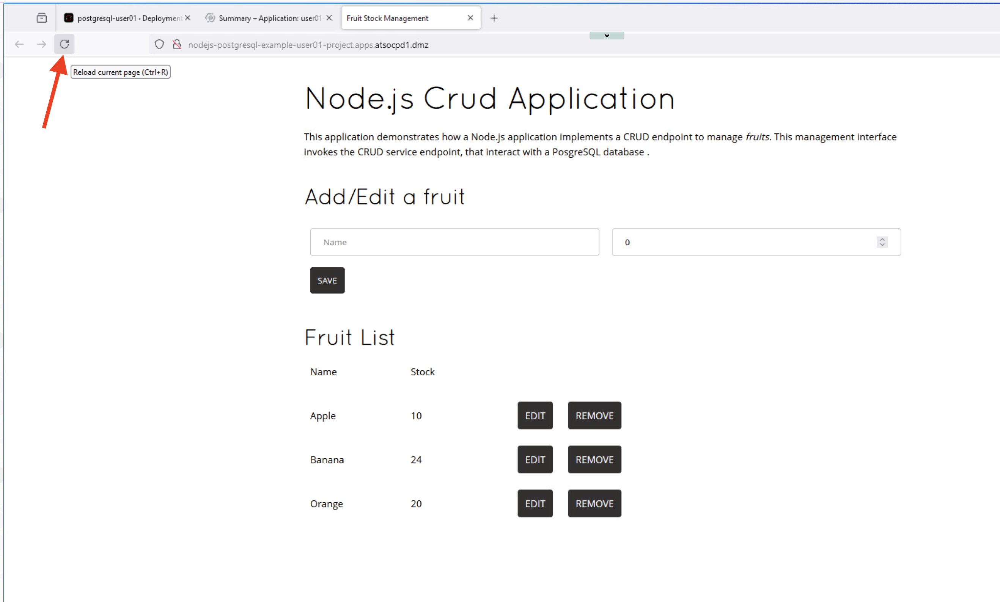
-
You should receive an error page similar to the screen snippet that follow the below tip:
Tip
If you do not see the error page at first, click the reload icon on the browser tab every few seconds until you see the error message shown below.

Exploring the Cloud Pak for AIOps Console¶
There is a gap of a few minutes between the time the Instana agent detects the problem, the Instana server learns about it, and Cloud Pak for AIOPs learns about it and turns it into an alert and then an incident. Let's explore the Cloud Pak for AIOPs a bit and by then the incident should be created.
-
Navigate to your IBM Cloud Pak for AIOps dashboard at https://cpd-cp4aiops.apps.ocpaocp.dmz/zen/#/homepage. Click through any security warnings.
Select OpenShift Authentication from the Log in with dropdown, then click the blue Log in button.

-
When presented with three choices in a Log in with box, as shown below, select the ldap-ats-wscdmz-wfwsldapcl01 option, and then log in with your usual lab credentials (i.e., usernn).
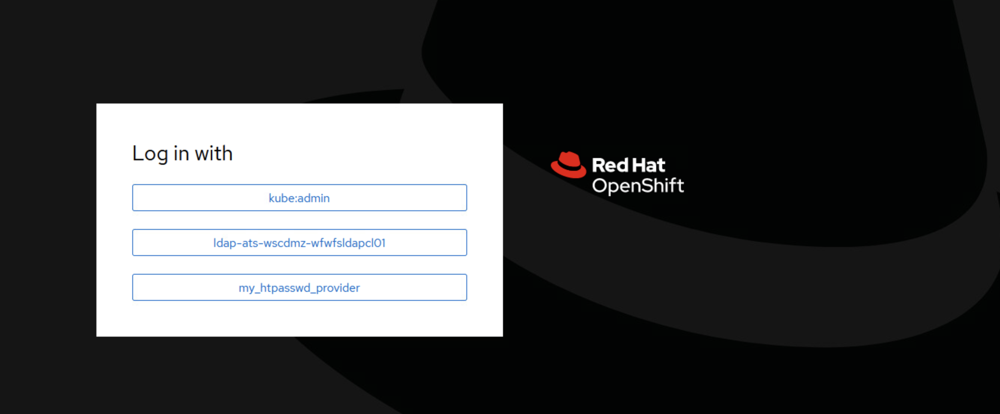
You may be prompted to authorize access to a service account in the cp4aiops project. Select Allow selected permissions if prompted.
While navigating the Cloud Pak for AIOps platform, you might be prompted to take a tour of certain features. Select "Maybe Later" - you can come back to these tours later if you wish by clicking the "Tours" button in the top-right of the page.
After successful login, and dismissing any offers to take a tour, you should be at your Cloud Pak for AIOps home page, which should look like this:
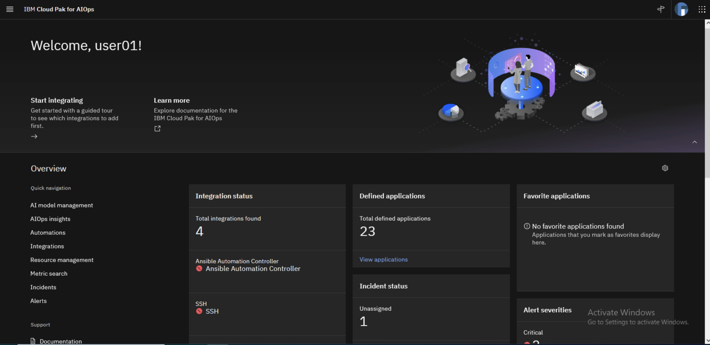
When you first log in to Cloud Pak for AIOps, you are taken to the homepage that displays the most important information that you have access to. Depending on your credentials, different "widgets" will appear for you to see and act on.
AIOps Insights¶
-
Navigate to Operate->AIOps Insights from the left-side menu. It may be necessary to click the "hamburger-menu" button in the top-left corner of the page to bring the left-side menu into view.
You should reach a page similar to this:

On this page, you see visualizations of two of the main goals of Cloud Pak for AIOps - improving problem resolution time (Mean Time to Restore) and reducing the "signal-to-noise ratio" from all of the monitoring data produced within your enterprise IT environment (Reduction of Noise).
Mean Time to Restore (MTTR) (click to expand)
The total time period from the start of a failure to resolution. For business-critical applications, downtime of just a few minutes can mean thousands or millions of dollars' worth of lost revenue. IBM Cloud Pak for AIOps reduces MTTR by using AI-driven insights to recommend actions and runbooks to solve the issue more quickly.
Noise Reduction (click to expand)
The concept of reducing the number of IT events and alerts that your operations staff must evaluate, speeding recovery time and reducing employee fatigue.
In the image above, over 300,000 events were narrowed down to 10,000 alerts, which were further narrowed down to 431 incidents. These incidents are what IT Operations staff needs to evaluate and remediate either through manual processes, or by building automation for repeating incidents.
Next, you will take a look at where all of these events are coming from.
Integrations¶
-
From the left-side menu, navigate to Define -> Integrations.
You should see a page like this:
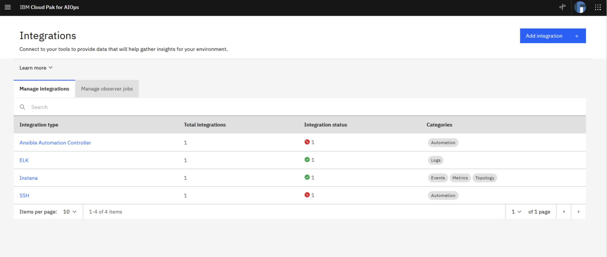
Two of these integrations are inbound- Cloud Pak for AIOps is receiving data from the sources configured in the integration.
- Cloud Pak for AIOps is receiving events, metrics, and topology data from the Instana integration to the Instana server that you are using in this lab. The metrics received from Instana can be fed as training data to Metric Anomaly Detection machine learning algorithms, although this is not covered in the lab.
- Log messages from select OpenShift applications are being forwarded to an ELK server and are then ingested by Cloud Pak for AIOps via the ELK integration. Cloud Pak for AIOps can use these log messages as training data to Log Anomaly Detection machine learning algorithms.
Two of these integrations are outbound- the server configured in the integration receives commands from Actions that are part of Runbooks.
- The SSH integration is used for runbook actions that need to log in to a remote system via SSH and issue commands from that remote system.
- The Ansible Automation Controller integration is used for runbook actions that invoke Ansible playbooks that reside on the Ansible Automation Platform server defined in this integration.
Note
Don't worry that the SSH and Ansible Automation Controller integrations indicate an error in the Integration status column. This occurs due to the permissions granted to your usernn roles within Cloud Pak for AIOps. They do show up as working when this page is viewed by a Cloud Pak for AIOps administrator.
Two of these integrations come into play for this lab. Topology data has come from the Instana integration. Also, coming from the Instana integration will be the Instana event that Cloud Pak for AIOps will turn into an alert, and then an incident.
You will resolve the incident using a runbook whose actions use the SSH integration to issue commands to correct the problem you introduced earlier.
Resource Management¶
-
From the left-side menu, navigate to Operate -> Resource Management.
You should see a screen similar to what is shown below:
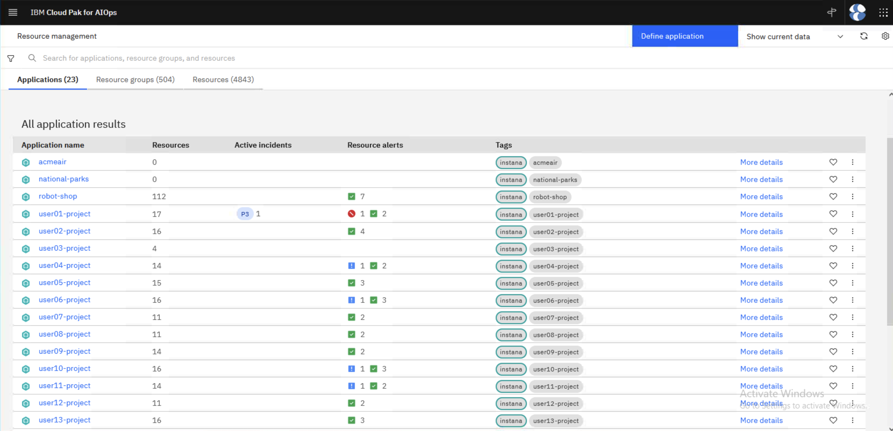
You can define your own Applications to Cloud Pak for AIOps, but in our lab environment, Cloud Pak for AIOps has created all of the applications from information it received via the Instana integration.
-
Search for and click the link for your usernn-project application.
You will see a page like this:
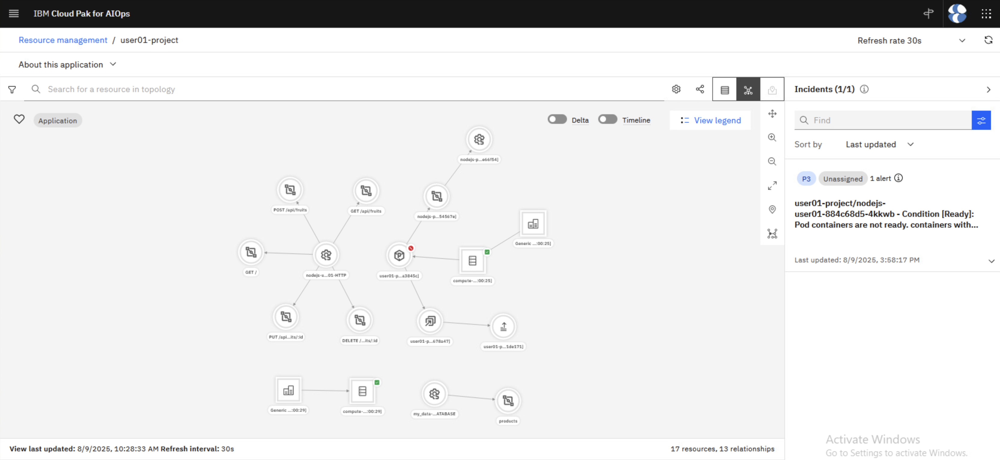
You now have a scoped view of the resources associated with the your sample Fruit application. You can zoom in on the topology to better see the individual application components and relationships.
Automations¶
-
From the left-side menu, navigate to Operate -> Automations. If there are any filters applied, you can clear them by clicking the filter button and unchecking any that are applied.

The automation tools - policies, runbooks, and actions - help you resolve incidents quickly by setting up and enabling an automatic response as situations arise.
Policies are rules that contain condition and action sets. They can be triggered to automatically promote events to alerts, reduce noise by grouping alerts into an incident, and assign runbooks to remediate alerts.
-
Find the policy named Promote userNN postgresql alert to incident, and click it. In the panel that pops in from the right, click the Specification tab.
Tip
Use the search bar to quickly find the Promote userNN postgresql alert to incident policy
After selecting the Specification tab the panel that popped in from the right that should look like this:
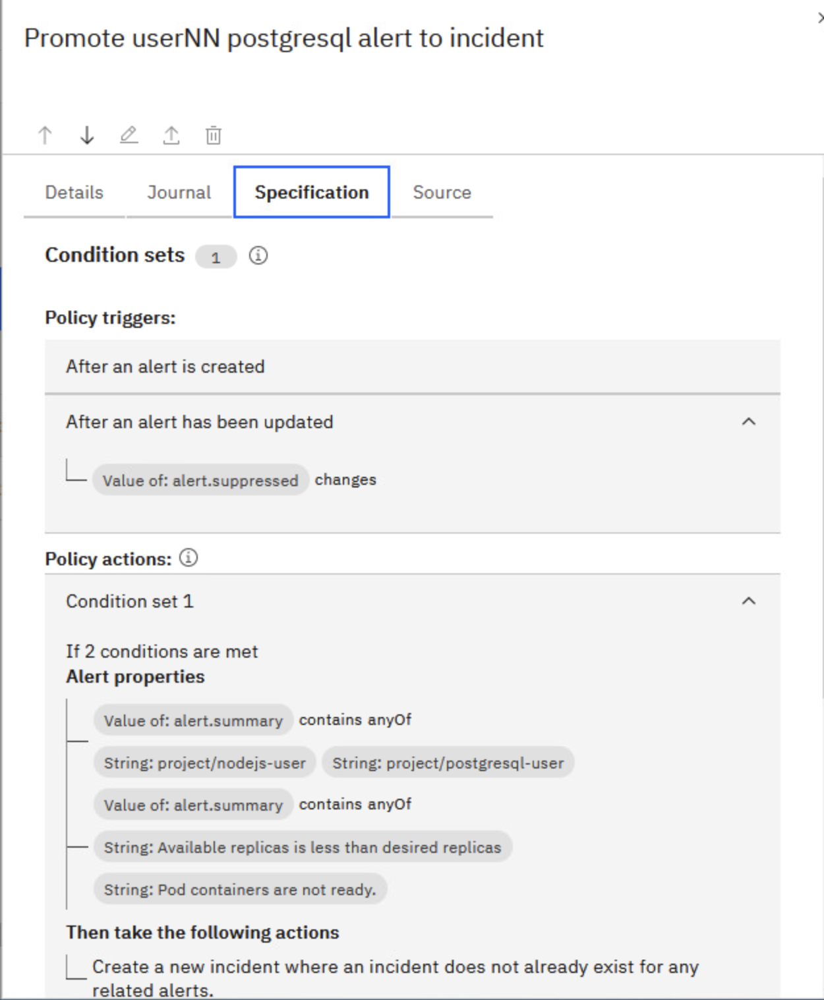
This policy looks for alerts that satisfy both of these two conditions:
-
The value of the
alert.summaryfield within the alert contains eitherproject/nodejs-userorproduct/postgresql-user. -
The value of the
alert.summaryfield within the alert also contains eitherAvailable replicas is less than desired replicasorPod containers are not ready.
The policy also states what should happen when the policy finds a matching alert. In this case, it will promote the alert to an incident if an incident does not already exist for any related alerts.
-
-
Navigate to the Runbooks tab on the Automations page.
You should see a page like this:
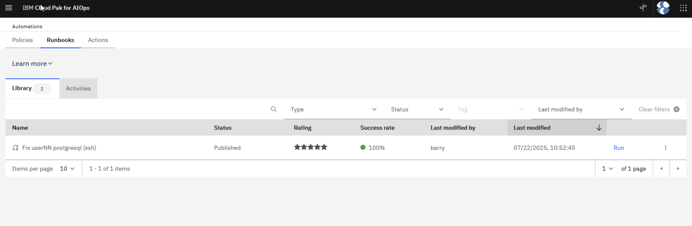
Runbooks automate procedures, thereby increasing the efficiency of IT operations processes. Runbooks are made up of one or more actions that can be taken against a target environment through either ssh commands (which is what this lab uses), HTTP calls, or Ansible playbooks.
You can also switch to the Activities tab under the Runbooks tab to see all of the previous runbook usage.
-
Navigate to the Actions tab on the Automations page.
Actions in runbooks are the collection of steps grouped into a single automated entity. An action improves runbook efficiency by automatically performing procedures and operations.
-
Find and click the Fix userNN postgresql environment variable action in the list of actions, and then click the Content tab of the panel that pops in from the right.
The contents of the action should look like this:
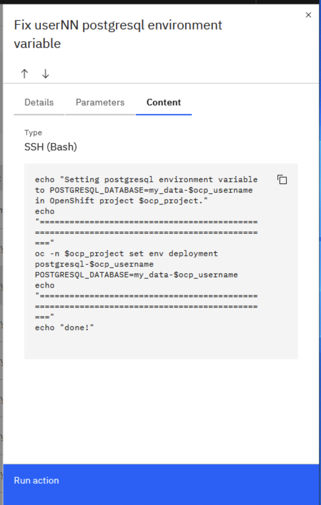
This action enables CP4AIOps to ssh to a target server and run the proper oc (OpenShift CLI) commands to solve the issue.
Runbooks and actions can be associated with incidents so that whenever an incident is created that meets certain criteria, a runbook can be recommended, or even automatically run. Although the problem you introduced in this lab is very simple and could easily have been corrected by having the runbook run automatically, we set things up so that you will run the runbook yourself.
Fixing the error in your application¶
Typically in Cloud Pak for AIOPs, a large number of events ingested by Cloud Pak for AIOPs are reduced to a smaller number of alerts, which are then reduced to an even smaller number of incidents. IT Operators and Site Reliability Engineers will typically work from the Incidents view.
-
In the left-side menu, navigate to Operate -> Incidents.
You'll get a page like this:

Depending on what alerts are triggered at the time you go through this lab, the current incidents will look different.
Incidents are where the IT operators and administrators should focus their attention to either manually close incidents as they are generated or build actions and runbooks in order to remediate incidents automatically as they appear.
-
Find the incident that begins with userNN-project/nodejs-userNN, where userNN is your user number, and select the link in the Title column.
Caution
Please be careful to select your correct incident. There is nothing stopping you from accidentally selecting another user's incident and closing it in the coming steps.
You will see a page that similar to this:
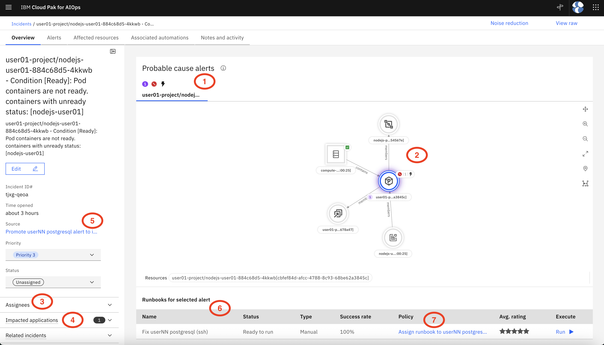
The incident contains many pieces of information that can be used to more quickly remediate issues.
- (1) Probable cause alerts - Cloud Pak for AIOps attempts to derive the root fault component, and the full scope of components that are affected by an incident
- (2) Topology - provides a view of the affected components so IT Operators can see the incident in context.
- (3) Assignees - you can either manually assign incidents to team members to resolve, or Cloud Pak for AIOps can assign people or teams automatically if a policy is configured to do so. Our lab's policy does not assign this incident to anyone.
- (4) Impacted Applications - any business applications that Cloud Pak for AIOps identifies as impacted by the incident
- (5) Source - this lists the policy that promoted an alert to an incident. You looked at this policy a few minutes ago in the lab.
- (6) Runbooks for selected alert - an alert can have a runbook assigned to it by a policy. Note: Although not covered in this lab, Cloud Pak for AIOps can also suggest, based on how it has been trained in its machine learning algorithms, recommended runbooks for remediating incidents.
- (7) In addition to the policy that promoted an alert to an incident, a different policy, listed here and named Assign runbook to userNN postgresql incident, was used to assign a runbook to the alert. That is, the policy listed in (5) in this list is what caused Cloud Pak for AIOps to create an incident from the alert, but it was the policy listed here in (7) that suggested a runbook for the alert.
-
Back in the Cloud Pak for AIOps incident near the bottom of the page, click the Run button (1) associated with the Fix userNN postgresql (ssh) runbook.
Tip
You may need to scroll down within the incident to find the runbook associated with the incident.

After clicking the Run button you should see a page like this:

This runbook is made up of four separate actions. Each action is a bash command issued through an SSH connection. It is not required that all commands be of the same type. For example, one step could be a bash command while the second could be an Ansible playbook or an API call.
- In Step 1 the runbook will log into the OpenShift cluster from a Linux server via an SSH connection. (In our lab environment, this server is running Red Hat Enterprise Linux (RHEL) in a Linux guest running under z/VM, although these details are transparent to you.)
- In Step 2 it will check if the POSTGRESQL_DATABASE environment variable is properly set.
- In Step 3 it will remediate the error. The remediation for this error is to edit the Postgresql deployment's environment variable to the correct database name of my_data-usernn, rather than my_data-usernn-error.
- Finally, in Step 4 it will check the environment variable again to confirm that it was properly changed.
-
Prior to running the actions, begin by entering four parameter values in the Details pane on the right- those for user, ocp_username, ocp_password, and ocp_project.
This table describes the six parameters used by the runbook, including the two you should not change and the four you need to change to provide values unique to you.
Parameter Value Comment target 192.168.176.61 DO NOT CHANGE- this is the IP address of the server defined in the SSH integration user usernn, where nn is your unique number a userid on the target server that can be a target of the SSH command $ocp_username usernn, same as the user parameter the userid used to log in to OCP in the runbook, also used to construct the desired name of the environment variable to be corrected by the runbook $ocp_password your OpenShift password found on the Environment Access page (the same one you've been using throughout the lab). $ocp_project usernn-project, where nn is your unique number the runbook targets its OCP CLI commands to this project $ocp_server https://api.atsocpd1.dmz:6443 DO NOT CHANGE- this is the URL for the OCP API server which receives the OCP CLI commands that the runbook invokes Your screen should look like this after you have filled in the parameter values.

-
After populating the variables, click Start Runbook at the bottom of the page.
After you click Start Runbook, the Run button for the first step in the runbook will be enabled.

-
Click the Run button for Step 1: Log in to OpenShift to start the first action in the runbook.
Wait for Step 1 to complete. Your screen should look similar to this:

-
Once Step 1 has completed successfully, click the Next step button in order to enable the Run button for Step 2: Check userNN postgresql environment variable.
-
Complete each remaining step in the runbook, clicking Run and waiting for the step to complete sucessfully before clicking Next step.
If the output of Step 4 includes the response POSTGRESQL_DATABASE=my_data-usernn, like in the screen shot below, then the application issue should be fixed.
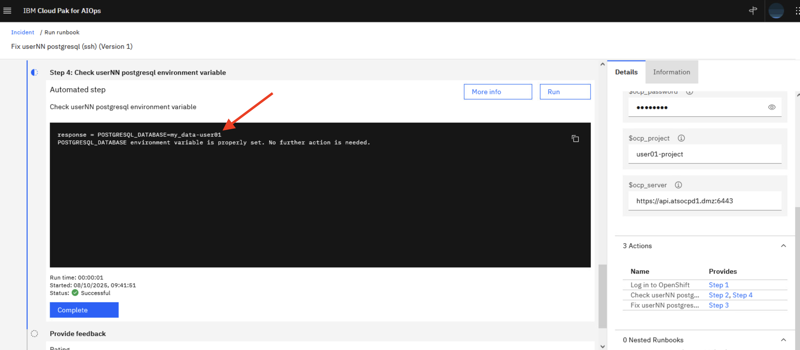
Since it is the last step in the Runbook, at the end of Step 4: Check userNN postgresql environment variable, you will have a Complete button to click instead of a Next Step button.
You can give the runbook a 1-5 star rating, leave a comment, and mark that it worked. This feature allows users to provide feedback to the automation engineers and AI algorithms so that the runbook can be improved.
-
Go back to your browser tab that has the error page for your Fruit application and Click the reload icon. Now that the problem has been fixed, you should see your application again:

In Cloud Pak for AIOps, you can manually mark your incident as resolved, or you can let Cloud Pak for AIOps identify that the error has been fixed and it will close the incident automatically.
AI Model Management¶
During the lab you worked with an incident that was generated by user-defined policies. This allowed the lab instructors the control necessary to ensure that the steps in this lab can be consistently repeatable for all students.
This section will show you the AI algorithms that come with Cloud Pak for AIOps. These algorithms provide the ability for trained models to provide noise-reducing capabilities- for example, by reducing the number of alerts created, or assigning multiple alerts to a single incident. The AI algorithms can be used to create policies that you can deploy, allowing AI to be involved in creating alerts and incidents in addition to the user-defined policies that you just worked with.
Note
For lab purposes, we actually have disabled some of the features that would be left on in a production environment. As an example, in the lab we have multiple lab students each breaking their own instance of the Fruit application in the same way, at about the same time. By default, Cloud Pak for AIOps would recognize the similarity of each student's alerts and would group multiple students' alerts into the same incident. We therefore disabled the out-of-the-box policy that would group these alerts into a single incident, so that each student receives, and can work with, their own incident without affecting other students.
-
From the left-side menu, navigate to Operate -> AI Model Management.

At the top of this page are models that you can set up to train with your own data, which is typically provided via your integrations. (Our lab system has Instana and ELK defined, although you only took advantage of the Instana integration in this lab.)
The bottom of the page has some models that come pre-trained by IBM.
If you click any of the tiles on this page, a pop-in panel from the right provides more information about that algorithm and the benefit it provides.
Wrapping Up¶
In this lab, you have seen some of the capabilities of Instana and Cloud Pak for AIOps and how they can observe and manage IBM Z applications and infrastructure.
With Instana and IBM Cloud Pak for AIOps, you can keep your applications up and running, meeting your SLAs, and when incidents do arise, you can remediate them quickly.
We encourage you to look through the references below and reach out to the lab author if you would like to see or learn more.